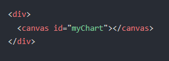
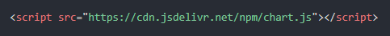

Presentacion tecnología
Materia: Taller de Comunicación
CHAR.JS
Entre muchas bibliotecas de gráficos para desarrolladores de aplicaciones de JavaScript, Chart.js es actualmente la más popular.
Caracteristicas
Chart.js proporciona un conjunto de tipos de gráficos, complementos y opciones de personalización de uso frecuente. Además de un conjunto razonable de tipos de gráficos integrados , puede usar tipos de gráficos adicionales mantenidos por la comunidad . Además de eso, es posible combinar varios tipos de gráficos en un gráfico mixto (básicamente, combinar varios tipos de gráficos en uno en el mismo lienzo). Chart.js es altamente personalizable con complementos personalizados para crear anotaciones, zoom o funcionalidades de arrastrar y soltar, por nombrar algunas cosas. valores predeterminados
Pasos para su implementacion en nuestra aplicacion
Primero, necesitamos tener una etiqueta canvas en nuestra página. Se recomienda darle al gráfico su propio contenedor para la capacidad de respuesta
Ahora que tenemos un canvas, podemos incluir Chart.js desde un CDN.
Finalmente, podemos crear un gráfico. Agregamos un script que llame el elemento "myChart" y lo instancia new Chart con la configuración deseada: tipo de gráfico, etiquetas, datos y opciones.